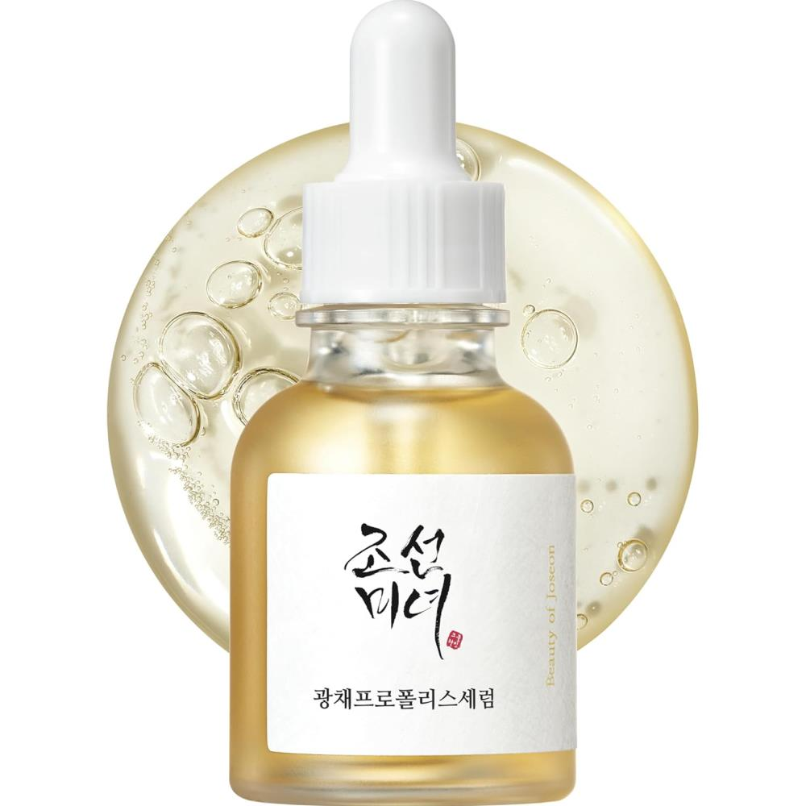
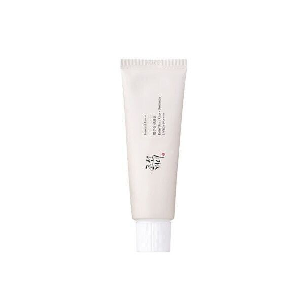
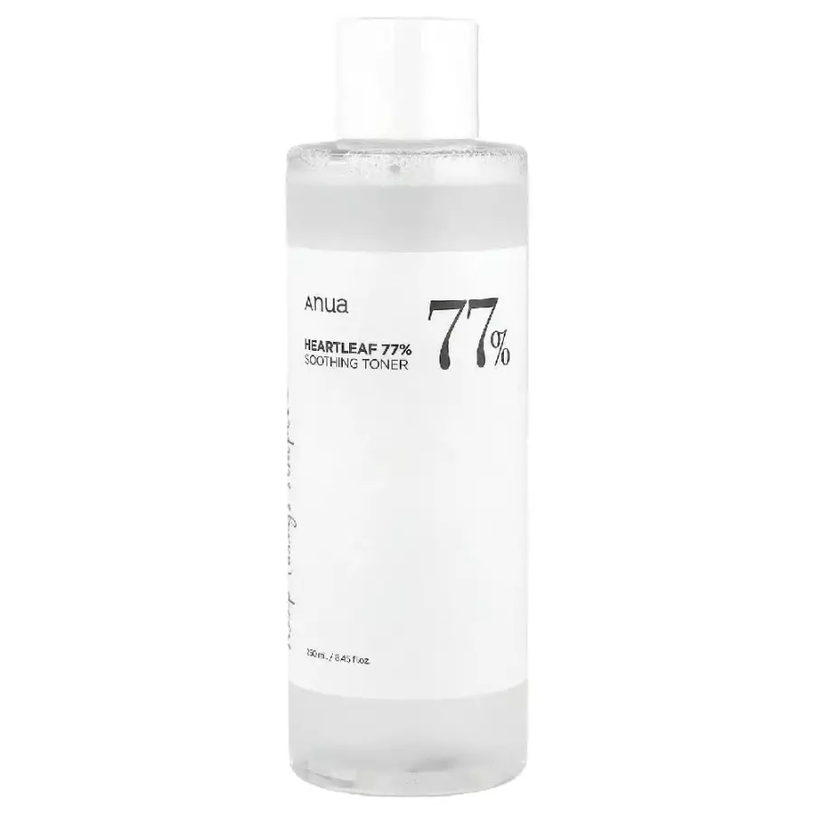
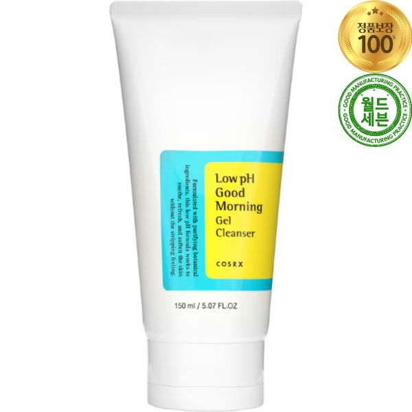
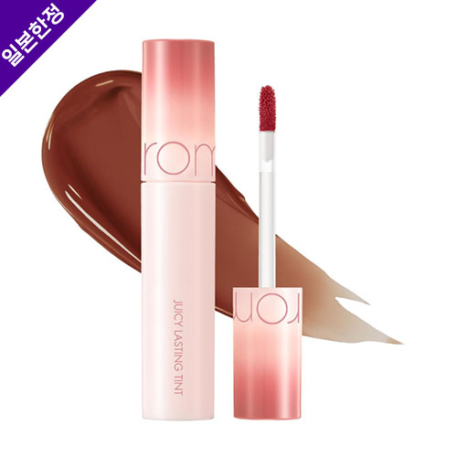

HiddenFindsDaily
Honest Korean skincare picks for glass skin
Honest, first-person picks of cult-favorite Korean skincare — serums, sunscreens, toners and more you can buy worldwide.

6 Best Korean Serums for Glass Skin (2026)
The Korean serums I actually recommend

6 Best Korean Sunscreens for Glass Skin (2026)
The Korean sunscreens worth repurchasing

6 Best Korean Toners for Glass Skin (2026)
The Korean toners I keep coming back to

6 Best Korean Cleansers for Glass Skin (2026)
The Korean cleansers that never strip

6 Best Korean Essences for Glass Skin (2026)
The Korean essences for that glow

6 Best Korean Cushions for Glass Skin (2026)
The Korean cushions worth the hype

6 Best Korean Sheet Masks for Glass Skin (2026)
The Korean sheet masks I stock up on

6 Best Korean Lip Tints for Glass Skin (2026)
The Korean lip tints I reach for daily

Korean Skincare Routine: The Right Order (2026)
A simple glass-skin routine, step by step

Glass Skin Under $20: 6 Viral K-Beauty Gems (2026)
Cult finds from $9 — that punch way above their price

Best Korean Skincare for Glass Skin
Hydrating, glow-boosting picks

Korean Skincare for Beginners: What to Buy First (2026)
Skip the actives overload — 5 gentle, foolproof picks

Best Korean Skincare for Acne-Prone Skin
Gentle picks to calm and clear

Best Korean Skincare for Dry Skin
Deep hydration picks

The Best COSRX Products (K-Beauty Cult Favorites)
COSRX's greatest hits